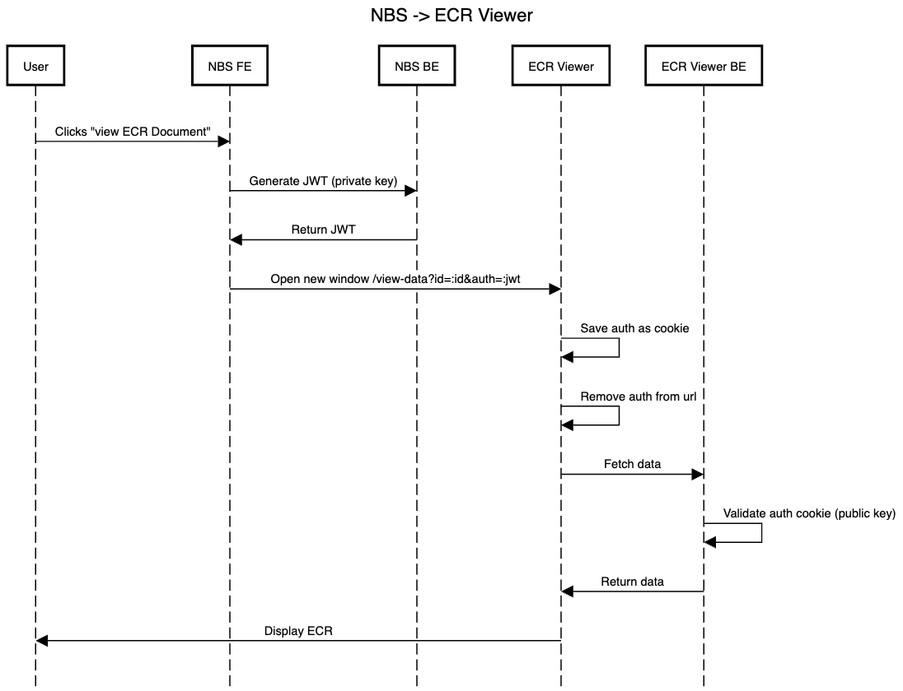

Display an eCR
URL : /ecr-viewer/view-data?id=:id&snomed-code=:snomed&auth=:auth
URL Parameters :
id=[string] where id is the ID of the eCR.snomed-code=[string] Optional. Where snomed-code is the condition the user is viewing the eCR for.auth=[string] where auth is the authentication token for the user. Only required if NBS_PUB_KEY is set and other auth not enabled.Method : GET
Auth required : Yes, via auth param or broswer login flow
Permissions required : None

Condition : eCR exists and authentication is valid.
Code : 200 OK
Content : eCR will be displayed to the user
Condition : eCR does not exist with id
Code : 404 NOT FOUND
Content : Error will be displayed to user
Condition : Authentication is invalid
Code : 401 UNAUTHORIZED
Content : Error will be displayed to user
Deprecated - please use Process eCR instead.
Process a zip file containing an eCR/RR pair
URL : /ecr-viewer/api/process-zip
POST Form Fields :
upload_file=[File] where the file is a zip containing an eCR named CDA_eICR.xml and optionally a reportability response named CDA_RR.xml.return_fhir_bundle=[true|false] Optional. By default, the fhir bundle is not returned. Set this field to "true" to have the response include the bundle field with the FHIR json object.Method : POST
Auth required : Yes, token passed via Authorization header
Permissions required : None
Process an eCR (e.g. seed-scripts/baseECR/star-wars/yoda-zika-v1-positive) and have the processed FHIR bundle returned.
curl --location '<DIBBS_URL>/ecr-viewer/api/process-zip' \
--form 'upload_file=@"<PATH_TO_ECR_ZIP_FILE>";type=application/zip' \
--form 'return_fhir_bundle=true' \
--header 'Authorization: Bearer <TOKEN>'
Condition : eCR was processed and saved to storage. If metadata database is enabled, metadata was saved to relational database.
Code : 200 OK
Content : message and optionally bundle if requested
Condition : eCR failed to process or metadata failed to save if enabled
Code : 400
Content : message with details on error
Condition : eCR already processed
Code : 409 CONFLICT
Content : message with details on error
Process a message containing an eCR/RR pair
URL : /ecr-viewer/api/process-ecr
POST Form Fields :
ecr=[string|File] Either a string containing the content of the eCR, an eCR xml file, or a zipped eCR/RR pairrr=[string|File] Optional. Either a string or file containing the content of the RRreturn_fhir_bundle=[true|false] Optional. By default, the fhir bundle is not returned. Set this field to "true" to have the response include the bundle field with the FHIR json object.Note, in addition to accepting these fields as a form body, a stringified JSON body is also accepted.
Method : POST
Auth required : Yes, token passed via Authorization header
Permissions required : None
Process an eCR (e.g. seed-scripts/baseECR/star-wars/yoda-zika-v1-positive) and have the processed FHIR bundle returned.
With inlined string contents:
curl --location '<DIBBS_URL>/ecr-viewer/api/process-ecr' \
--form 'ecr=<"<PATH_TO_ECR_FILE>"' \
--form 'rr=<"<PATH_TO_RR_FILE>"' \
--form 'return_fhir_bundle=true' \
--header 'Authorization: Bearer <TOKEN>'
With file contents:
curl --location '<DIBBS_URL>/ecr-viewer/api/process-ecr' \
--form 'ecr=@"<PATH_TO_ECR_FILE>"' \
--form 'rr=@"<PATH_TO_RR_FILE>"' \
--form 'return_fhir_bundle=true' \
--header 'Authorization: Bearer <TOKEN>'
With zip file:
curl --location '<DIBBS_URL>/ecr-viewer/api/process-ecr' \
--form 'ecr=@"<PATH_TO_ECR_RR_ZIP_FILE>";type=application/zip' \
--form 'return_fhir_bundle=true' \
--header 'Authorization: Bearer <TOKEN>'
Condition : eCR was processed and saved to storage. If metadata database is enabled, metadata was saved to relational database.
Code : 200 OK
Content : message and optionally bundle if requested
Condition : eCR failed to process or metadata failed to save if enabled
Code : 400
Content : message with details on error
Condition : eCR already processed
Code : 409 CONFLICT
Content : message with details on error
Migrate the metadata database if needed. Typically, this is done to bring the database up to date with the state of the application, including updating the conditions used in the viewer to match the Trigger Code Reference Service. It can also be used to revert migrations and return the database to a prior state. If there is no admin user set up, this API can also be used to seed an initial admin user.
URL : /ecr-viewer/api/migrate-db
POST Form Fields :
migration_secret=[secret string] confirm that you have permission to perform migrations. The secret is logged to the server and can optionally be set to a known value via the METADATA_DATABASE_MIGRATION_SECRET environment variable.direction=[up|down] Optional. By default an up migration to the latest state will be applied. If down is passed, the database will be migrated downward one step at a time. This means it may take multiple calls to the database to revert back to the desired state.skip_condition_update=[true|false] Optional. By default, when migrating up, the conditions reference data will be updated from the Trigger Code Reference Service. Conditions are never deleted, but names or categories could be updated if new data is available. To skip this update, pass the string "true" to this field.init_admin_email=[string] Optional. If passed and there is no admin already set up, this will create an admin user. Note, in order to be useful, the email must match a user who is able to sign in via the authentication provider used in the deployment.Method : POST
Auth required : Yes, token passed via Authorization header
Permissions required : None
Migrate a DB to the latest state.
curl --location '<DIBBS_URL>/ecr-viewer/api/migrate-db' \
--form 'migration_secret=<your migration secret>' \
--header 'Authorization: Bearer <TOKEN>'
Roll back a DB migration one step.
curl --location '<DIBBS_URL>/ecr-viewer/api/migrate-db' \
--form 'migration_secret=<your migration secret>' \
--form 'direction=down' \
--header 'Authorization: Bearer <TOKEN>'
Condition : migration was succesfully applied.
Code : 200 OK
Content : message
Condition : URL parameters were invalid
Code : 400
Content : message with details on error